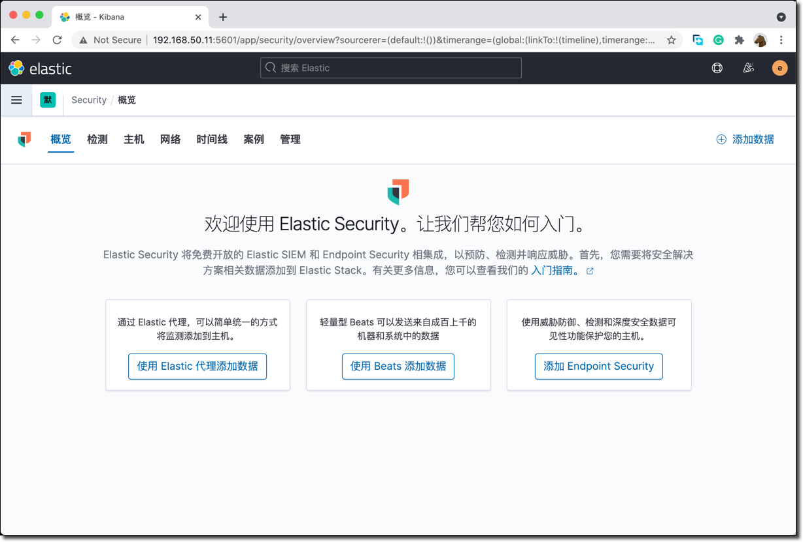

用 Elastic Security 来武装每一位安全运维人员，从容的预防、检测和应对网络威胁。这款免费开放的解决方案提供了 SIEM、端点安全、威胁狩猎、云监控、恶意软件保护等功能。在这个课程中，您将学习如何利用 Elastic Security 的 SIEM 功能和威胁检测功能来为您的安全运维保驾护航。
本课程专为安全分析师（SecOps），和其它对此感兴趣工程师而设计。希望你在本课程中体验到运用 Elastic Security 进行安全运维的一天。你将学习到如何使用 Elastic Security 来可视化数据，配置数据摄入，并应用规则检测引擎。在本课程结束时，你将全面掌握使用 Elastic Security 来检测基础设施威胁的工作方法，能够运用 Elasticsearch 的快速搜索进行实时的安全防护和响应。
在本课程中您将会学到：
- 在单节点 Linux 服务器上搭建 Elasticsearch + Kibana 服务。
- 学习使用 Elastic Stack 进行安全管理的基本概念和方案架构。
- 使用 Elastic 提供的 Auditbeat、 Filebeat 和 PacketBeat 摄入数据。
- 部署和接入外部开源 IDS 软件 Scatea 的监控数据
- 学习使用 Elastic Security 提供的时间线事件分析工具
- 启用和配置内置的安全监测规则，实施 MITRE ATT&CK 安全威胁狩猎
- 应用机器学习的异常监测能力自动化和增强安全巡检
Elastic Security 安全方案架构

本课程所使用到的 Elastic Stack 的组件包括：
- Elasticsearch、Kibana、Packetbeat、Filebeat、Auditbeat 版本是 7.11. 2。
- Suricata 版本 5.0.6，开源入侵监测引擎。
安全管理旅程的四个阶段
网络信息安全管理方案的复杂性和成本是有目共睹的，通常安全相关工作由安全管理团队专人专职负责，他们运用各种专业技能和工具开展日常的工作。Elasticsearch 在安全领域是经常被使用到的搜索和分析平台。Elastic 在最近几年着重发展了对安全管理的支持。用户可以在已有的 Elastic Stack 的技能的基础上，平滑的扩展到安全管理使用场景，复用现有的技能和 ELK 基础设施解决安全管理的痛点。

分阶段的开展安全管理的推荐过程如下：
- STEP1：使用 Beats 按需收集各种安全事件
- STEP2：使用 SIEM 功能开展 SOC 日常安全运维工作，Kibana 作为统一的搜索分析工具
- STEP3：基于内置的安全监测规则，自动化威胁检测和告警机制
- STEP4：与外部安全管理工具系统集成，完成无盲区的安全事故检测响应全工作流程
启动一个 CentOS 8 Linux 虚拟机，内存建议至少 4GB，推荐 6GB。
安装配置 Elasticsearch
假设所有安装包和配置文件都位于 /vagrant 目录下
cd /vagrant/rpm
sudo rpm -ivh ./elasticsearch-7.11.2-x86_64.rpm
创建 TLS 数字证书
sudo /usr/share/elasticsearch/bin/elasticsearch-certutil cert -out /etc/elasticsearch/elastic-certificates.p12 -pass ""
sudo chmod 660 /etc/elasticsearch/elastic-certificates.p12
sudo ls -l /etc/elasticsearch/elastic-certificates.p12
更新 Elasticsearch 配置文件为一下内容。
# ---------------------------------- Cluster -----------------------------------
cluster.name: elk-security
# ----------------------------------- Paths ------------------------------------
path.data: /var/lib/elasticsearch
path.logs: /var/log/elasticsearch
# ---------------------------------- Network -----------------------------------
network.host: 0.0.0.0
# --------------------------------- Discovery ----------------------------------
discovery.type: single-node
# ------------------------------- TLS and Cert ---------------------------------
xpack.security.enabled: true
xpack.security.transport.ssl.enabled: true
xpack.security.transport.ssl.verification_mode: certificate
xpack.security.transport.ssl.keystore.path: elastic-certificates.p12
xpack.security.transport.ssl.truststore.path: elastic-certificates.p12
上见示例配置文件 sec-2.yml
用以上内容替换默认 elasticsearch.yml 文件的内容。然后重启 Elasticsearch 服务。
sudo cp /vagrant/sec-2.yml /etc/elasticsearch/elasticsearch.yml
sudo systemctl daemon-reload
sudo systemctl enable elasticsearch.service
sudo systemctl start elasticsearch.service
sudo systemctl status elasticsearch
使用 sudo tail -f /var/log/elasticsearch/elk-security.log 命令查看当前 Elasticsearch 服务的日志。
初始化 ES 服务器内建用户的密码，这些密码需要在控制台上复制保存备用。
sudo /usr/share/elasticsearch/bin/elasticsearch-setup-passwords auto -b
以上命令的输出如下：
Changed password for user apm_system
PASSWORD apm_system = MxKeoXQrHjG0uiVMvHZC
Changed password for user kibana_system
PASSWORD kibana_system = 0Vd8sJ8s6vIqOkUhD406
Changed password for user kibana
PASSWORD kibana = 0Vd8sJ8s6vIqOkUhD406
Changed password for user logstash_system
PASSWORD logstash_system = 1Cvgip4QIq9VNnz6lcPc
Changed password for user beats_system
PASSWORD beats_system = bqfuocxvzENOUtGgLWpc
Changed password for user remote_monitoring_user
PASSWORD remote_monitoring_user = amncUjSCzIL0a89Twn2K
Changed password for user elastic
PASSWORD elastic = V4CQNvnBpQUI1Bc2Ty1M
在浏览器中访问http://192.168.50.11:9200/ ，测试并确认上面的 elastic 用户的密码。
安装配置 Kibana
执行 Kibana 安装命令
cd /vagrant/rpm/
sudo rpm -ivh kibana-7.11.2-x86_64.rpm
准备 Kibana 的配置文件，如下：
server.host: 192.168.50.11
server.port: 5601
elasticsearch.hosts: ["http://192.168.50.11:9200"]
elasticsearch.username: elastic
elasticsearch.password: V4CQNvnBpQUI1Bc2Ty1M
i18n.locale: zh-CN
xpack.security.enabled: true
xpack.security.encryptionKey: "fhjskloppd678ehkdfdlliverpoolfcr"
xpack.encryptedSavedObjects.encryptionKey: "Si0gjCjujZ0LghDiApKJfGhGeVJ8JwxrY1z7rOpBva"
xpack.fleet.agents.tlsCheckDisabled: true
上见示例配置文件 sec-3.yml
更新默认配置文件，用以上示例配置文件覆盖 Kibana 默认配置文件。
sudo cp /vagrant/sec-3.yml /etc/kibana/kibana.yml
sudo systemctl start kibana.service
sudo systemctl status kibana.service
查看重启的服务是否工作正常。
sudo tail -f /var/log/messages
在浏览器里测试登录 Kibana http://192.168.50.11:5601 ，使用 elastic 的用户名和密码。应该看到如下的界面。

创建一个用于解析 IP 地址地理位置的 pipeline
PUT _ingest/pipeline/geoip-info
{
"description": "Add geoip info",
"processors": [
{
"geoip": {
"field": "client.ip",
"target_field": "client.geo",
"ignore_missing": true
}
},
{
"geoip": {
"field": "source.ip",
"target_field": "source.geo",
"ignore_missing": true
}
},
{
"geoip": {
"field": "destination.ip",
"target_field": "destination.geo",
"ignore_missing": true
}
},
{
"geoip": {
"field": "server.ip",
"target_field": "server.geo",
"ignore_missing": true
}
},
{
"geoip": {
"field": "host.ip",
"target_field": "host.geo",
"ignore_missing": true
}
}
]
}
GET _ingest/pipeline/geoip-info

安装配置 Auditbeat
sudo rpm -ivh /vagrant/rpm/auditbeat-7.11.2-x86_64.rpm
sudo auditbeat setup -e \ -E output.logstash.enabled=false \ -E output.elasticsearch.hosts=[‘192.168.50.11:9200'] \ -E output.elasticsearch.username=elastic \ -E output.elasticsearch.password=V4CQNvnBpQUI1Bc2Ty1M\ -E setup.kibana.host=http://192.168.50.11:5601
auditbeat.modules:
- module: auditd
audit_rule_files: [ '${path.config}/audit.rules.d/*.conf' ]
audit_rules: |
- module: file_integrity
paths:
- /bin
- /usr/bin
- /sbin
- /usr/sbin
- /etc
- module: system
datasets:
- package # Installed, updated, and removed packages
period: 2m # The frequency at which the datasets check for changes
- module: system
datasets:
- host # General host information, e.g. uptime, IPs
- login # User logins, logouts, and system boots.
- process # Started and stopped processes
- socket # Opened and closed sockets
- user # User information
user.detect_password_changes: true
login.wtmp_file_pattern: /var/log/wtmp*
login.btmp_file_pattern: /var/log/btmp*
tags: ["service-siem", "vagrant-vm"]
fields:
env: workshop
output.elasticsearch:
hosts: ["192.168.50.11:9200"]
username: elastic
password: V4CQNvnBpQUI1Bc2Ty1M
pipeline: geoip-info
processors:
- add_host_metadata:
netinfo.enabled: false
geo:
location: 35.5528, 116.2360
continent_name: Asia
country_iso_code: CN
region_name: Beijing
region_iso_code: CN-BJ
city_name: Beijing
name: myCyberSecLab
- add_locale: ~
- add_fields:
when.network.source.ip: private
fields:
source.geo.location:
lat: 35.5528
lon: 116.2360
source.geo.continent_name: Asia
source.geo.country_iso_code: CN
source.geo.region_name: Beijing
source.geo.region_iso_code: CN-BJ
source.geo.city_name: Beijing
source.geo.name: myCyberSecLab
target: ''
- add_fields:
when.network.destination.ip: private
fields:
destination.geo.location:
lat: 35.5528
lon: 116.2360
destination.geo.continent_name: Asia
destination.geo.country_iso_code: CN
destination.geo.region_name: Beijing
destination.geo.region_iso_code: CN-BJ
destination.geo.city_name: Beijing
destination.geo.name: myCyberSecLab
target: ''
setup.ilm.check_exists: false
logging.level: error
queue.spool: ~
monitoring.enabled: true
sudo cp /vagrant/sec-4.yml /etc/auditbeat/auditbeat.yml sudo systemctl start auditbeat sudo systemctl status auditbeat
安装配置 Pecketbeat
sudo rpm -ivh /vagrant/rpm/packetbeat-7.11.2-x86_64.rpm
sudo packetbeat setup -e \ -E output.logstash.enabled=false \ -E output.elasticsearch.hosts=[‘192.168.50.11:9200'] \ -E output.elasticsearch.username=elastic \ -E output.elasticsearch.password=V4CQNvnBpQUI1Bc2Ty1M\ -E setup.kibana.host=http://192.168.50.11:5601
#=== Packetbeat specific options ===
#=== Network device ===
# Select the network interface to sniff the data. On Linux, you can use the
# "any" keyword to sniff on all connected interfaces.
packetbeat.interfaces.device: any
#=== Flows ===
packetbeat.flows:
timeout: 30s
period: 10s
#=== Transaction protocols ===
# For more information on the transaction protocols, see
# https://www.elastic.co/guide/en/beats/packetbeat/7.4/configuration-protocols.html
packetbeat.protocols:
- type: icmp
# Enable ICMPv4 and ICMPv6 monitoring. Default: false
enabled: true
- type: dhcpv4
# Configure the DHCP for IPv4 ports.
ports: [67, 68]
send_request: true
send_response: true
- type: dns
# Configure the ports where to listen for DNS traffic. You can disable
# the DNS protocol by commenting out the list of ports.
ports: [53]
include_authorities: true
include_additionals: true
send_request: true
send_response: true
- type: http
# Configure the ports where to listen for HTTP traffic. You can disable
# the HTTP protocol by commenting out the list of ports.
ports: [80, 8080, 8000, 5000, 8002]
- type: tls
# Configure the ports where to listen for TLS traffic. You can disable
# the TLS protocol by commenting out the list of ports.
ports:
- 443 # HTTPS
- 993 # IMAPS
- 995 # POP3S
- 5223 # XMPP over SSL
- 8443
- 8883 # Secure MQTT
- 9243 # Elasticsearch
tags: ["service-siem", "vagrant-vm"]
fields:
env: workshop
output.elasticsearch:
hosts: ["192.168.50.11:9200"]
username: elastic
password: V4CQNvnBpQUI1Bc2Ty1M
pipeline: geoip-info
processors:
- add_host_metadata:
netinfo.enabled: false
geo:
location: 35.5528, 116.2360
continent_name: Asia
country_iso_code: CN
region_name: Beijing
region_iso_code: CN-BJ
city_name: Beijing
name: myCyberSecLab
- add_locale: ~
- add_fields:
when.network.source.ip: private
fields:
source.geo.location:
lat: 35.5528
lon: 116.2360
source.geo.continent_name: Asia
source.geo.country_iso_code: CN
source.geo.region_name: Beijing
source.geo.region_iso_code: CN-BJ
source.geo.city_name: Beijing
source.geo.name: myCyberSecLab
target: ''
- add_fields:
when.network.destination.ip: private
fields:
destination.geo.location:
lat: 35.5528
lon: 116.2360
destination.geo.continent_name: Asia
destination.geo.country_iso_code: CN
destination.geo.region_name: Beijing
destination.geo.region_iso_code: CN-BJ
destination.geo.city_name: Beijing
destination.geo.name: myCyberSecLab
target: ''
setup.ilm.check_exists: false
logging.level: error
queue.spool: ~
monitoring.enabled: true
sudo cp /vagrant/sec-5.yml /etc/packetbeat/packetbeat.yml sudo systemctl start packetbeat sudo systemctl status packetbeat
ping www.goo.ne.jp
安装配置 Filebeat
sudo rpm -ivh /vagrant/rpm/filebeat-7.11.2-x86_64.rpm
sudo filebeat setup -e \ -E output.logstash.enabled=false \ -E output.elasticsearch.hosts=[‘192.168.50.11:9200'] \ -E output.elasticsearch.username=elastic \ -E output.elasticsearch.password=V4CQNvnBpQUI1Bc2Ty1M\ -E setup.kibana.host=http://192.168.50.11:5601
sudo filebeat modules enable system
sudo filebeat modules list
#=========================== Filebeat inputs =============================
filebeat.inputs:
- type: log
enabled: false
paths:
- /var/log/*.log
#============================= Filebeat modules ===============================
filebeat.config.modules:
path: ${path.config}/modules.d/*.yml
reload.enabled: true
reload.period: 60s
tags: ["service-siem", "vagrant-vm"]
fields:
env: workshop
output.elasticsearch:
hosts: ["192.168.50.11:9200"]
username: elastic
password: V4CQNvnBpQUI1Bc2Ty1M
pipeline: geoip-info
processors:
- add_host_metadata:
netinfo.enabled: false
geo:
location: 35.5528, 116.2360
continent_name: Asia
country_iso_code: CN
region_name: Beijing
region_iso_code: CN-BJ
city_name: Beijing
name: myCyberSecLab
- add_locale: ~
- add_fields:
when.network.source.ip: private
fields:
source.geo.location:
lat: 35.5528
lon: 116.2360
source.geo.continent_name: Asia
source.geo.country_iso_code: CN
source.geo.region_name: Beijing
source.geo.region_iso_code: CN-BJ
source.geo.city_name: Beijing
source.geo.name: myCyberSecLab
target: ''
- add_fields:
when.network.destination.ip: private
fields:
destination.geo.location:
lat: 35.5528
lon: 116.2360
destination.geo.continent_name: Asia
destination.geo.country_iso_code: CN
destination.geo.region_name: Beijing
destination.geo.region_iso_code: CN-BJ
destination.geo.city_name: Beijing
destination.geo.name: myCyberSecLab
target: ''
setup.ilm.check_exists: false
logging.level: error
queue.spool: ~
monitoring.enabled: true
sudo cp /vagrant/sec-6.yml /etc/filebeat/filebeat.yml sudo systemctl start filebeat sudo systemctl status filebeat
Interactive Terminal Spawned via Python
加载规则
启用检测规则
创建和测试 winrar 在 SQL 服务器上压缩文件的场景
sudo yum -y install epel-release sudo yum -y install suricata
sudo suricata-update
/etc/sysconfig/suricata
eth0 eth1
vi /etc/suricata/suricata.yaml
vars:
more specific is better for alert accuracy and performance
address-groups:
HOME_NET: "[192.168.50.0/24,10.0.2.0/24]"
sudo systemctl start suricata
sudo filebeat modules enable suricata
Perform SSH DDoS Test Attack On another system, install hping3 tool and perform an SSH DDoS test attack.
sudo dnf -y install hping3 Then attack SSH on the server running Suricata.
hping3 -S -p 22 –flood –rand-source 192.168.50.11 Refer to man hping3.
While hping is running, tail the alert logs on Suricata server;
sudo tail -f /var/log/suricata/fast.log
sudo tail -f /var/log/suricata/fast.log